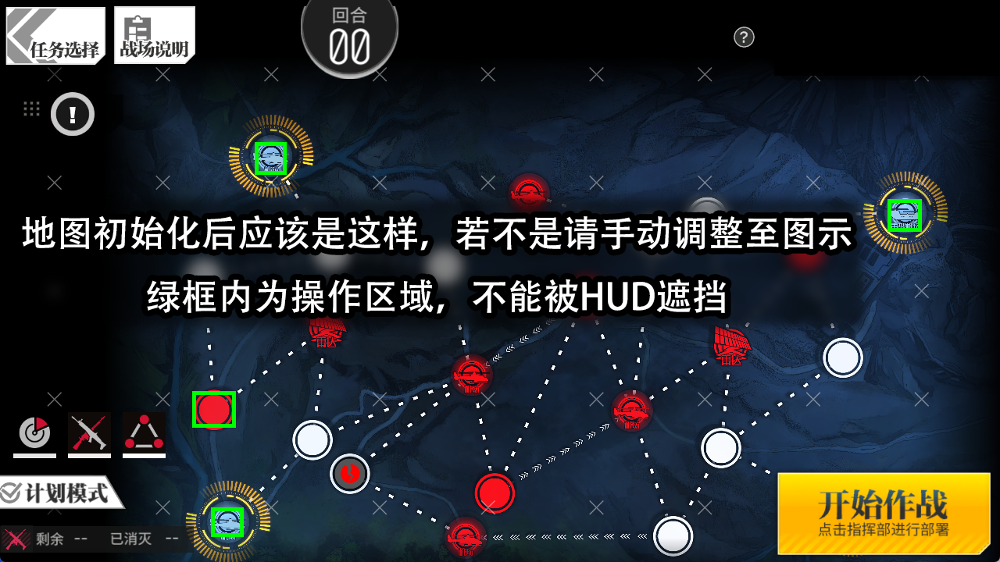

8-1N双打手炸狗使用手册
一、基础设置
1.1 游戏设置
- 设置 -> 基础：
- 分辨率：1280×720
- 设置 -> 作战：
- 记录上次完成关卡时镜头缩放：开启
- 自动补给：关闭
1.2 梯队配置
需要保证第1、2、3梯队空闲可用！
- 第一梯队：
- 打手在梯队 非队长位
- 任意一个妖精（确保打手能正常炸狗），不得为空
- 第二梯队：
- 仅包含打手 不能包含妖精
- 第三梯队：
- 任意狗粮人形 不能包含妖精
关键要求：
- 确保其中一个打手满弹药，另一个打手空弹药
- 将两个打手添加为收藏人形（确保不翻页即可找到）
1.3 地图初始设置
- 进入8-1N关卡
- 将地图缩放到最小，运行一次初始化 ，若自动初始化与下图差异较大请手动调整！ ：

梯队部署（自动部署）：
- 左下机场：放置第一梯队
- 左上机场：放置第二梯队
- 右上机场：放置第三梯队
1.4 最终验证
强烈建议首次运行时进行该操作，以避免自动初始化在不同设备上的不同表现带来的误差
- 手动执行一次炸狗操作，确认：
- 打手能正常击败敌人
- 梯队不会被击败
- 点击终止作战 → 重新作战，确认：
- 地图缩放比例保持不变
- 无需拖动地图即可开始
二、注意事项
2.1 装备安全措施
脚本默认强化功能会自动使用所有非五星装备进行强化！
请确保以下装备已上锁：
- 所有需要保留的未强化装备
- 所有需要保留的非五星装备
装备强化建议：
- 建议将强化装备先强化一定等级
- 建议卸下所有非打手的装备且保证打手装备不会出现在强化页面！
脚本的拆解功能会拆解所有未锁定装备！
三、常见问题解答
3.1 进入8-1N点击开始任务没反应？
问题原因
解决方案：地图缩放问题
正确操作步骤
- 居中地图：
- 确保地图视图大致居中
-
非居中状态可能导致缩放不到最小
-
缩放至最小：
-
向下滚动鼠标滚轮 至 缩放到最小级别
-
手动初始化：
- 手动放置狗粮梯队
-
执行一次作战
-
保存设置：
- 完成上述操作后，系统会自动保存缩放状态
提示：完成校正后，在不更改设置或在点击开始作战前拖动地图的前提下可直接启动该脚本。
8-1N 选项说明
| 选项名称 | 选项说明 |
|---|---|
| 81N_弹药检查版本选择 | 控制弹药识别逻辑版本 - 启用新版弹药识别（默认）：地图界面检测弹粮圈是否为空 - 启用旧版弹药识别：点进梯队详情检测弹药条是否为空 |
| 81N_是否开启结算加速 | 控制战斗结算是否加速 - 启用结算加速（默认）：识别到战斗胜利界面下方的EXP时进入加速结算流程，快速连点缩短结算时间 - 关闭结算加速：点击执行计划后固定等待65秒，适用于结算加速频繁会跳出“是否终止计划”弹窗的用户 |
| 81N_选择狗粮类型 | 选择重新作战前留在战场上的梯队类型 1. 重装小队（BGM-71）：无需人力 2. 人形小队（第三梯队）：部署第三梯队，如果为手枪狗粮会消耗2人力 |
| 81N_装备溢出处理 | 控制装备溢出后的操作 - 专属装备强化：溢出装备用于强化专属装备 - 拆解（锁上需保留装备）：溢出装备直接拆解（需手动锁定保留装备） - 结束任务：装备溢出后停止“8-1N 循环” |
| 81N_是否开启无限循环 | 控制任务重复模式 - 开启无限循环：任务完成后自动重新作战并按照设置自动处理装备（“8-1N 循环”） - 关闭无限循环：仅执行设定次数后停止 |
| 81N_路线选择 | 控制作战路线，仅影响战斗点位顺序 - 正常拖尸路线：默认常规路线 - 单打手刷装备路线：补给第一梯队和狗粮，第一梯队打完撤离以后重新作战 |
取个昵称吧～
第一次逛文档，留个昵称方便在评论里认出你。之后评论会自动带上，随时可在浏览器里清掉记录重填。